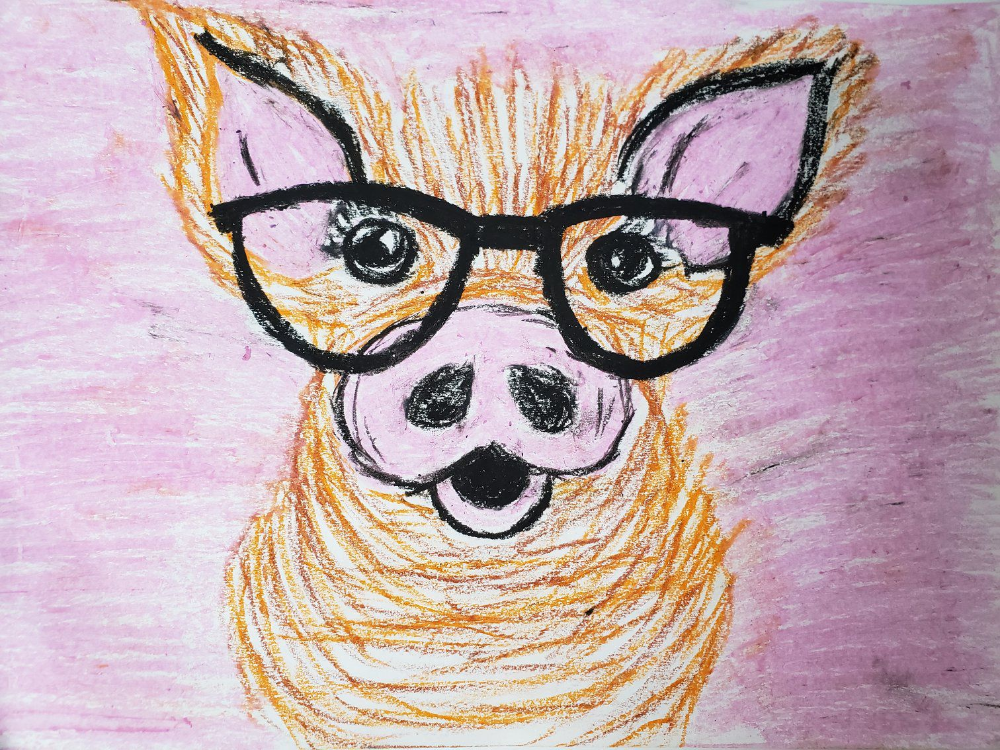

A typical pig has a large head with a long snout that is strengthened by a special prenasal bone and by a disk of cartilage at the tip.
The snout is used to dig into the soil to find food and is a very acute sense organ. There are four hoofed toes on each foot, with the two larger central toes bearing most of the weight, but the outer two also being used in soft ground. The dental formula of adult pigs is giving a total of 44 teeth. The rear teeth are adapted for crushing. In the male, the canine teeth form tusks, which grow continuously and are sharpened by constantly being ground against each other. Occasionally, captive mother pigs may savage their own piglets, often if they become severely stressed. Some attacks on newborn piglets are non-fatal. Others may cause the death of the piglets and sometimes, the mother may eat the piglets. It is estimated that 50% of piglet fatalities are due to the mother attacking, or unintentionally crushing, the newborn pre-weaned animals.